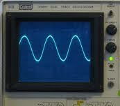
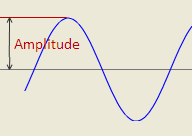
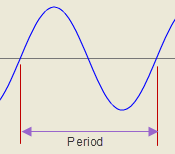

For example, on the right is a weight suspended by a spring. As it bounces up and down, its motion, when graphed over time, is a sine wave. In reality, friction and air resistance would cause the bouncing to slow down and eventually stop, but for illustration purposes we ignore that here.
Sound waves are very quick changes in air pressure which your ear interprets as sounds. For very pure single tones, a plot of air pressure against time would show them to be sine waves. For audio tones like this, pressure is cycling hundreds or thousands of times per second.

The electrical power in your house is AC or Alternating Current. The direction of current flow reverses 50 or 60 times per second depending on where you live. If you plot the voltage against time, you would find it is also a sine wave, because it is derived from a rotating generator.
Varying electrical voltages can be visualized on an instrument called an oscilloscope, like the one shown on the left. In the illustration, the signal being viewed is clearly a sine wave, and could be the display of the electrical supply voltage in a house.
Radio waves are very high speed variations in the electromagnetic field that is present in all of space. For a pure radio wave, this too is a sinusoidal variation. That is, the field is varying in the shape of a sine wave millions or more times per second.

The amplitude of a sine wave is the maximum distance it ever reaches from zero. Since the sine function varies from +1 to -1, the amplitude is one. In general, a sine wave is given by the formula In this formula the amplitude is A.In electrical voltage measurements, amplitude is sometimes used to mean the peak-to-peak voltage (Vpp) . This number will be twice the mathematical amplitude.
If this was a sound wave, the higher the amplitude, the louder the sound.
The frequency of a sine wave is the number of complete cycles that happen every second. (A cycle is the same as the period, see below.) In the bouncing weight above, the frequency is about one cycle per second.
In general, a sine wave is given by the formula In this formula the frequency is w.
Frequency used to be measured in cycles per second, but now we use the unit of frequency - the Hertz (abbreviated Hz). One Hertz (1Hz) is equal to one cycle per second. So the weight above is bouncing with a frequency of about 1Hz. The sound wave corresponding to Middle C on a piano is around 256Hz. If you tune your FM radio to 90.3, the radio wave carrying it has a frequency of 90.3MHz - or 90.3 megaHertz - 90.3 million cycles per second.

The period of a wave is the time it takes to perform one complete cycle. The wave is a series of identical cycles happening repeatedly.In the bouncing weight above, the period is about one second. Electrical house current has a period of one sixtieth of a second in the US, since it has a frequency of 60Hz or 60 cycles per second. Small times intervals like this are usually measured in milliseconds (mS) which are one thousandth of a second. One sixtieth of a second is approximately 17 milliseconds.